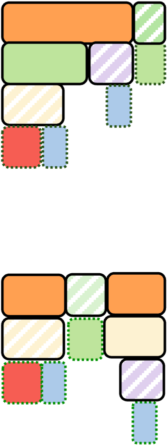
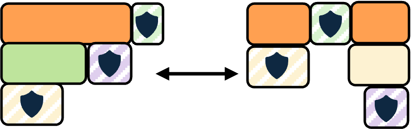
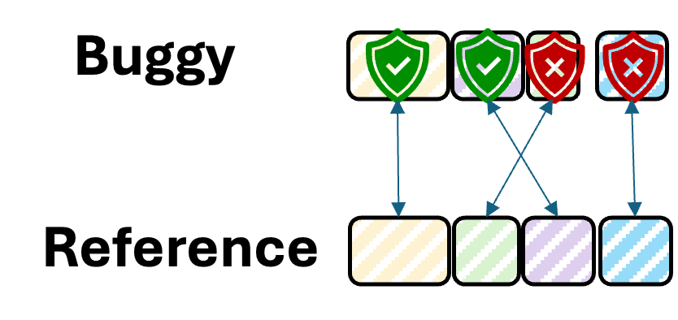

Phase 01
Preflight
Run a short iteration window on both the buggy and reference jobs, compare execution structure, and build an op profile before full replay.


OpGuard uses bitwise alignment to compare training runs at tensor boundaries, turning vague loss-curve anomalies into precise, actionable evidence.
Hover over any step to inspect the baseline loss, buggy loss, and exact delta. Step 3080 is still bit-aligned; step 3081 is where the hidden bug appears.
200+ ops in the forwarding pass
High-level modules like Attention and Feedforward decompose into hundreds of individual ops — each a concrete tensor operation at the finest debuggable granularity.
OpGuard compares intermediate tensors between a buggy run and a reference run at every checkpoint. Click a buggy-run tensor value to link it to the same reference tensor position: green means bit-exact match, red marks divergence.
Inspect a real production debugging session. The first divergent operation marks where the bug begins — click any op to inspect tensor-level diffs and jump to source.
OpGuard profiles a short run, replays both traces under determinism control, then aligns bitwise signatures offline to pinpoint the first divergent op.



Run a short iteration window on both the buggy and reference jobs, compare execution structure, and build an op profile before full replay.
Apply determinism control, rerun with instrumentation and runtime tracing, and record compact bitwise signatures at stable tensor boundaries.
Align the two runs offline, certify the first mismatch, and open the divergence in a visual debugging UI with full operator context.
High-level metrics aggregate over millions of GPU operations. OpGuard compares intermediate tensors bit-for-bit at linear projections, layer norms, and attention blocks — surfacing kernel races, framework mismatches, and silent data corruption.
Deployed at ByteDance, OpGuard diagnosed kernel races, framework mismatches, and hardware-level corruptions that existing checks missed — including a five-day embedding backward race localized in under five minutes.
We had been chasing the wrong subsystem for almost a week. OpGuard showed the exact kernel in under fifteen minutes.
Without OpGuard, we would never have noticed that the drift originated in a single row race. The loss precision is too low and gives us no clue where to start.
Internal: text and VLM pre-training, post-training framework
Open source: Megatron-LM, DeepSpeed, GPT-Neox, veRL, etc.
False positives: 2-10 during first adaptation, then disappear once marked.